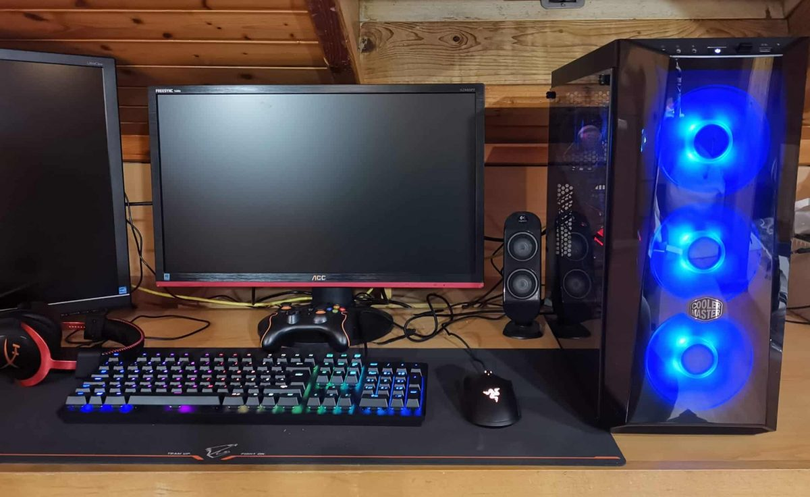

×
Computador não liga
Quando eu ligo o computador, ele emite uma série de bips estranhos. Isso acontece logo após pressionar o botão de ligar, antes mesmo de qualquer imagem aparecer na tela. Eu fiz algumas pesquisas e descobri que esses bips podem indicar problemas de hardware.
Então, estou procurando alguém com conhecimentos técnicos e experiência para me ajudar a diagnosticar e resolver esse problema. Se você é um freelancer confiável na área de assistência técnica, gostaria de contar com sua ajuda nessa situação.
